Seminar
Neutrinos in
curved spacetime
What happens to flavour oscillation when the journey follows a geodesic — and not a straight line.
Outline
Three parts, one question
I
Curved spacetime
Einstein, Schwarzschild, compact objects: where only General Relativity describes things well, and what the metric does to a neutrino.
II
The supernova, and neutrinos in the well
How the star collapses, where the shock wave comes from, and what happens to flavour when the emission takes place deep in a gravitational well.
III
GHOST: results
The shock front at the MSW resonance: the criterion, the cost in PH, the bias at DUNE and where to look.
Premise 1 · two bases
Flavour and mass: one state, two sets of axes
Premise 2 · Wolfenstein 1978 · Mikheyev & Smirnov 1985
The MSW resonance, and the weight of the ordering
Electrons in the medium forward-scatter νₑ through the charged current, and the other flavours do not feel this term:
When 2√2 GF ne E ≈ Δm² cos 2θ, the mixing becomes maximal: the MSW resonance, which is what the rest of this talk is about.
Keep for Part I
The potential acts in the local frame, with the local energy. Next to a compact object, “local” and “at infinity” are not the same thing.
II
Part two
Curved
spacetime
Gravity is not a force: it is geometry. Far from stars, the difference is a tiny correction. Next to a compact object, it is everything.
25 November 1915
Einstein and his field equations
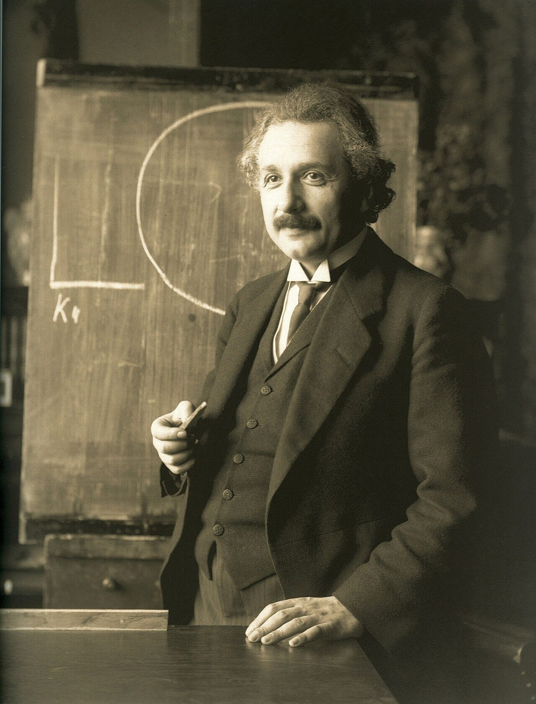
F. Schmutzer · public domain“Spacetime tells matter how to move; matter tells spacetime how to curve.”
The river model · Hamilton & Lisle 2008
Space falls · neutron star
Each node is a freely falling local frame, released from rest far away. In Gullstrand–Painlevé coordinates space is flat and flows inward at the escape velocity, v = √(2GM/r): the lattice is carried by the river. Near the mass the nodes run faster — the lines bend, cells stretch radially and squeeze sideways: the tide. At the star’s surface the river already runs at 0.59 c.
The river model · Hamilton & Lisle 2008
Space falls · black hole
The same lattice, now with no surface to stop the fall. At the horizon the river runs at exactly c: a light signal aimed outward can only stand still there, and inside it is dragged inward. That is why nothing gets out. The dashed line is the rate of a clock held at rest — it drops to zero at the horizon, where staying at rest is no longer possible.
The classical tests
Sobral, 1919: light bends
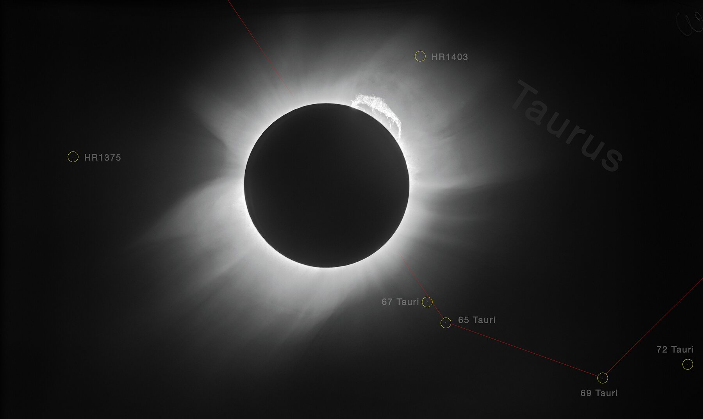
ESO / Landessternwarte Heidelberg-Königstuhl / Dyson, Eddington & Davidson · CC BY 4.0| effect | GR predicts |
|---|---|
| perihelion of Mercury (1915) | 43″ / century |
| light grazing the Sun (1919) | 1.75″ |
| redshift, Pound–Rebka (1959) | 2.5×10⁻¹⁵ over 22.5 m |
| Shapiro delay (1964) | ~200 μs |
| GPS clocks | +38 μs / day |
Sobral expedition (Ceará, Brazil): 1.98 ± 0.12″. Príncipe: 1.61 ± 0.30″. The sky over north-eastern Brazil confirmed Einstein.
December 1915 · Russian front
Schwarzschild and the first exact solution
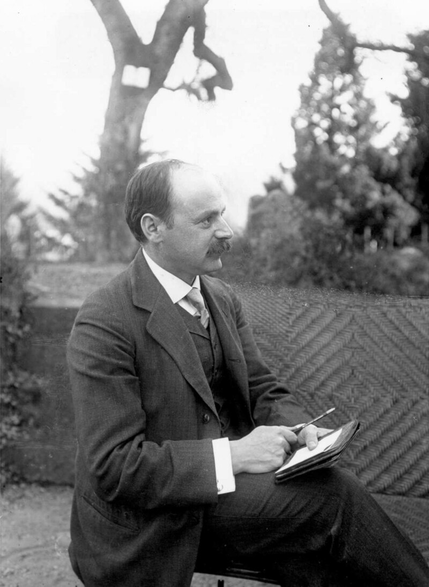
1 rs
event horizon
1.5 rs
photon sphere
3 rs
ISCO: last stable orbit
2.95 km
rs of the Sun (Earth: 8.9 mm)
He wrote to Einstein on 22 December 1915 while serving as an artillery officer. He died in May 1916.
What we need from the metric
Curvature does two things to a neutrino
1 · It changes the energy
A neutrino emitted at r with local energy E arrives at infinity with
The whole spectrum slides down, and the source's clock runs slower as seen from outside.
2 · It bends the path
The trajectory is a geodesic, not a straight line. Next to a compact object the deflection is large, and different paths can connect the same source to the same detector.
Photons and neutrinos follow the same geometry, which SN 1987A confirmed to ~0.5%.
Both matter because, in a supernova, emission happens deep in the well and detection happens far from it.
And there is a third, subtler one
The oscillation phase is accumulated along the geodesic, with the particle's proper time. In flat spacetime it reduces to the familiar Δm²L/4E; in a curved metric it does not.
We come back to this in three slides.
None of this is optional when the density that sets the MSW resonance is measured in the local frame and the detector sits 10 kpc away.
How much, in numbers
What arrives is not what left
| where | R | u = rs/R | z |
|---|---|---|---|
| neutrinosphere, 1.4 M☉ | 30 km | 0.138 | 0.077 |
| cooler neutrinosphere | 50 km | 0.083 | 0.044 |
| cold neutron star | 12 km | 0.345 | 0.235 |
| collapsar disk, 3 M☉ | 3 rs | 0.333 | 0.225 |
During accretion, the spectrum DUNE sees left the star ~8% more energetic than it arrives.
And so does the time interval: what the star lives in 1 s, we measure in 1.08 s. The neutrino light curve is read with the wrong clock if the metric is ignored.
Why this bites the resonance
The MSW condition involves the local energy. Using the detected energy instead shifts the resonance density by ~8%, and therefore shifts the radius where the conversion happens.
u and z computed with rs = 2GM/c²; z = (1 − u)−1/2 − 1.
Dashboard · Schwarzschild null geodesics
Light and neutrinos near a black hole
Every ray arriving with b < 3√3 M falls in. Just above that, it loops around the photon sphere before escaping.
An ultra-relativistic neutrino follows, to first order, the same null geodesic. Mass enters as a correction ∝ m²/E² — and that correction is exactly what carries the oscillation phase.
Dashboard · compactness
Where GR stops being a correction
z = (1 − rs/R)−1/2 − 1 · clock at rest on the surface compared with infinity · deflection from the exact orbit integral (weak field: 2rs/R).
Compact objects
The zoo where only GR works
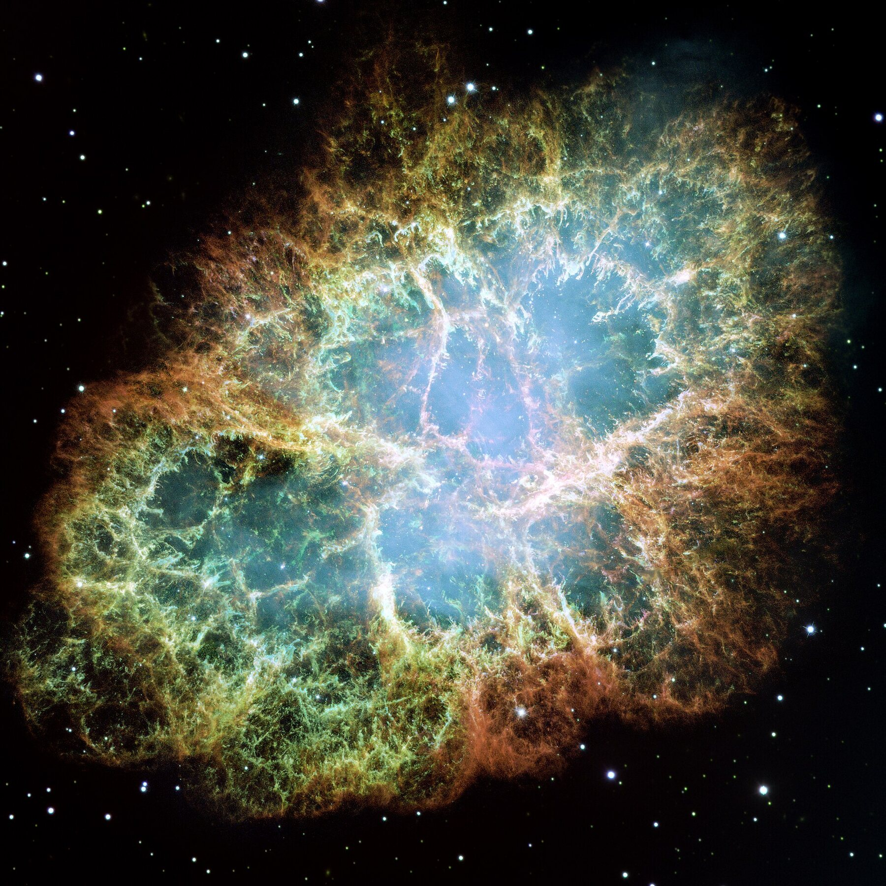
NASA, ESA, J. Hester & A. Loll · PD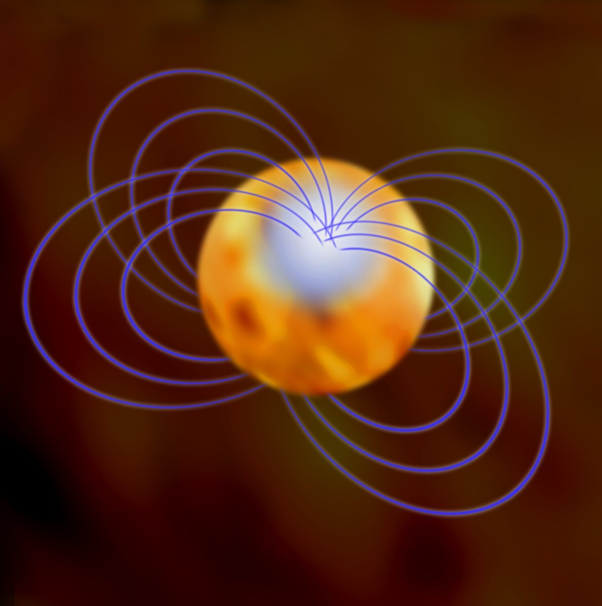
NASA/CXC/M. Weiss · PD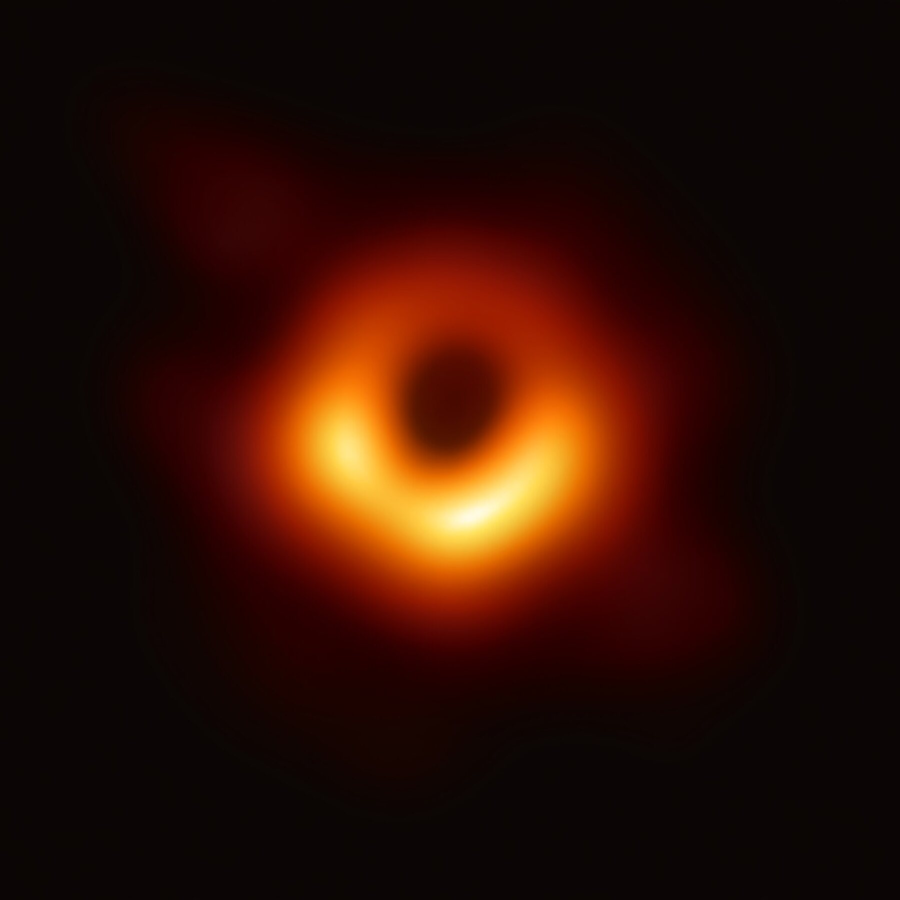
EHT Collaboration · CC BY 4.0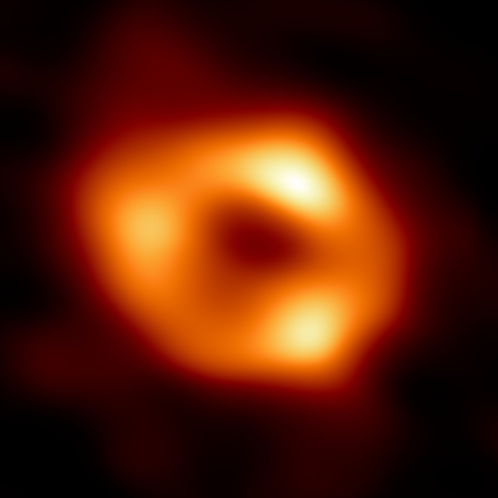
EHT Collaboration · CC BY 4.0Strong gravity, measured
Binary pulsars and gravitational waves
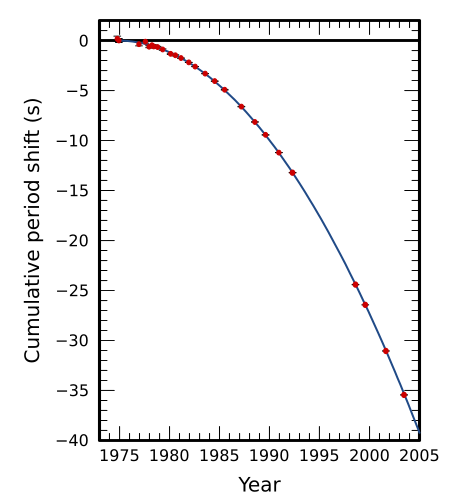
Inductiveload · public domain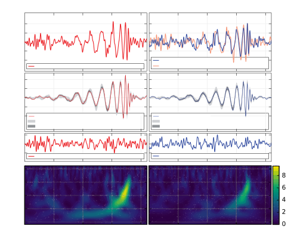
LIGO/Virgo · CC BY 3.0Stodolsky 1979 · Fornengo, Giunti, Kim & Song 1997
The phase along the geodesic
One-line derivation: with E and J = Eb conserved, Et − Jφ − ∫prdr cancels everything except the mass term.
1 · Radial: gravity “hides”
Φ = Δm²(rB − rA)/2E∞, the same form as flat space. But in local quantities (proper distance ∫dr/√B, energy Elocal) the flat formula is wrong.
2 · Non-radial: the path matters
The phase depends on b. Different paths between the same source and detector accumulate different phases.
3 · Many paths: interference
In a lens, the phase difference between paths is ∝ mk², not just Δm²: gravity gives access to the absolute mass.
Dashboard · a geodesic born at the source
Redshift, bending and phase from emission
III
Part three
Neutrinos in
curved spacetime
They are born inside the well. They cross regions light cannot cross. And they reach us carrying a phase that remembers the path.
23 February 1987 · Large Magellanic Cloud
SN 1987A: neutrinos before the light
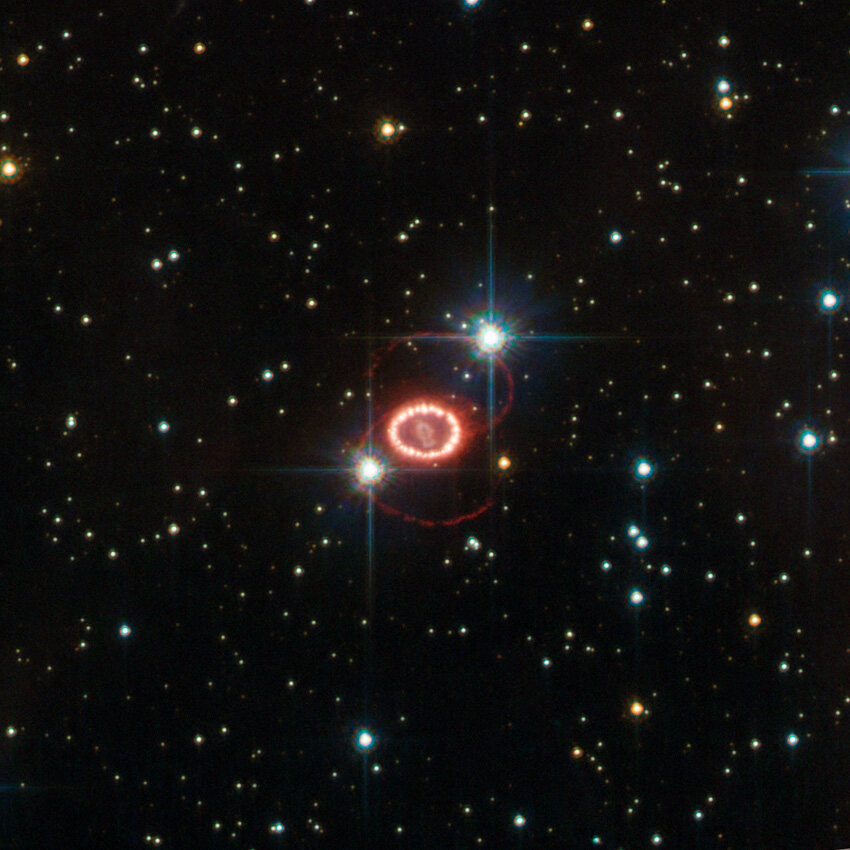
ESA/Hubble & NASA · CC BY 4.011
Kamiokande-II
8
IMB
5
Baksan
Within ~13 s, from 168,000 light-years. They arrived hours before the light: photons are trapped in the envelope, neutrinos are not. 99% of the ~3×10⁵³ erg of the collapse leaves as neutrinos.
A gravity test with two dozen events
Neutrinos and photons suffered the same Shapiro delay in the Galaxy's potential (months) — to within ~0.5% (Krauss & Tremaine; Longo, 1988). Neutrinos fall like light.
Anatomy · core-collapse supernova
The phases, and when each one happens
| phase | when | radius | what happens |
|---|---|---|---|
| collapse | −200 to 0 ms | 3,000 → 30 km | the iron core loses pressure and falls at ~0.25 c |
| bounce | t = 0 | ~10 km | nuclear matter stiffens and the inner core rebounds |
| prompt shock | 0 – 5 ms | 10 → 100 km | born at the sonic point, it runs outward |
| νe breakout | ~5 ms | ~100 km | ~1053 erg/s as it crosses the neutrinosphere |
| stalling | ~20 ms | ~150 km | becomes a standing accretion shock |
| ν heating | 0.1 – 1 s | 100 – 200 km | the gain region receives a few per cent of the luminosity |
| revival | ~0.3 s | ~200 km | the shock moves again: the star explodes |
| propagation | 1 s – hours | 10³ → 10⁶ km | it crosses the mantle and the envelope |
The energy budget
The gravitational binding energy released is 3×1053 erg. Of that, 99% leaves as neutrinos, and only ~1051 erg becomes kinetic energy of the explosion.
A supernova is, first of all, a neutrino event. The light is loose change.
Before the table: a day of silicon burning builds the ~1.4 M☉ iron core. During infall, above 1012 g/cm³ the νe become trapped, and the bounce occurs at 2.7×1014 g/cm³.
Timings from the delayed mechanism of Bethe & Wilson (1985). Radii depend on the progenitor; these are typical of ~15 M☉.
The delicate point of the mechanism
The shock stalls, and must be revived
The prompt shock does not blow up the star. It spends all its energy before getting out.
Photodisintegration
Breaking iron into nucleons costs 8.8 MeV per nucleon. Crossing 0.1 M☉ of iron consumes ~1.7×1051 erg, of the order of the shock's whole energy.
Neutrino losses
As it crosses the neutrinosphere, the freshly shocked matter becomes transparent and dumps the breakout burst. More energy gone.
Within ~20 ms it stops at ~150 km: it becomes a standing accretion shock.
What revives it
Between the neutrinosphere and the shock lies the gain region, where absorption of νe and ν̄e beats emission. A few per cent of the luminosity deposited there is enough to push the shock back out.
But the deposition is marginal: in spherical symmetry it almost never suffices. What closes the budget is convection and the SASI, which hold matter longer in the gain region.
That is why the problem was only settled in 3D, and why every progenitor explodes at a different instant.
Astrophysics · Woosley 1993
Collapsars: when a star fails to explode
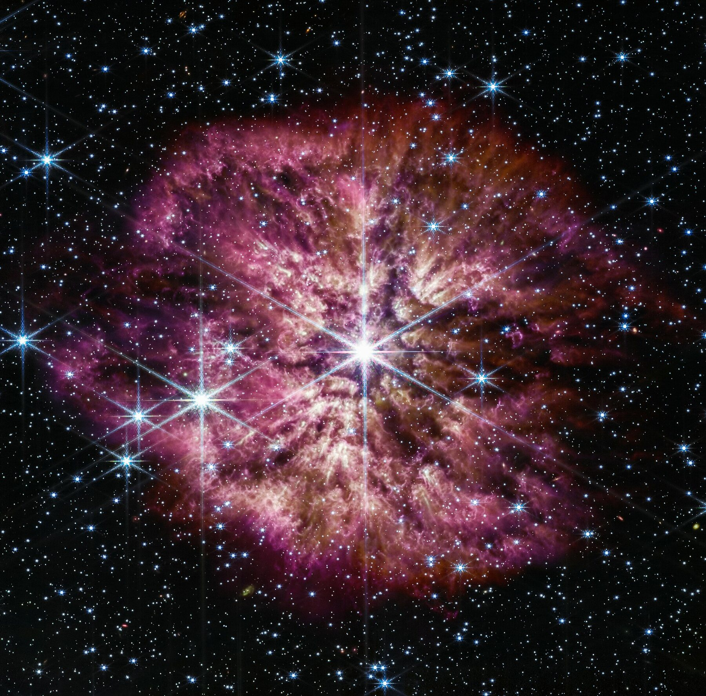
NASA, ESA, CSA, STScI, Webb ERO · CC BY 4.0A rapidly rotating Wolf–Rayet star of ~30 M☉ that has lost its hydrogen envelope.
- The iron core collapses and the shock does not revive: a black hole of ~2–3 M☉ forms.
- The envelope has too much angular momentum to fall straight in: an accretion disk forms a few rs out.
- Accretion at 0.01–1 M☉/s for tens of seconds → relativistic jets that drill through the star.
WR 124, imaged by JWST in 2023: the kind of star that may end this way.
MacFadyen & Woosley 1999 · Popham, Woosley & Fryer 1999
An engine cooled by neutrinos
In the inner disk, matter is so hot and dense that photons are trapped. What carries the heat away are neutrinos: an NDAF (neutrino-dominated accretion flow).
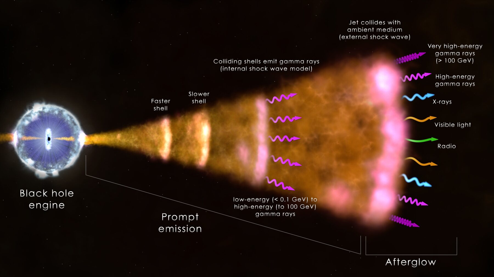
NASA/GSFC/ICRAR · PDAnd these neutrinos are emitted a few rs from a spinning black hole, where the geometry is Kerr, not Minkowski.
Where neutrinos are born
Emission happens inside the well
| source | emission radius | rs/R | Eemitted/E∞ |
|---|---|---|---|
| Sun, core | ~0.2 R☉ | 2×10⁻⁵ | 1.00001 |
| proto-neutron star, ~1 s | neutrinosphere ≈ 30 km | 0.14 | 1.08 |
| neutron star, late | ≈ 12 km | 0.34 | 1.24 |
| collapsar disk, ISCO (Schwarzschild) | 3 rs, orbiting | 0.33 | 1.41 |
| disk around a fast Kerr hole | < 3 rs | > 0.5 | > 1.4 · + Doppler |
The energy DUNE measures is E∞. The energy that enters the MSW potential, the collisions and the collective conversions is the local one — up to 40% larger.
Rays leave bent: the neutrinosphere looks bigger, and the angular distribution of the neutrinos crossing above it changes.
In the disk the ratio is ut = (1 − 3M/r)−1/2: gravitational and transverse redshift together. Doppler from the orbital motion adds or subtracts depending on direction.
Dashboard · Swami, Lochan & Dixit 2020
A gravitational lens weighs the neutrino
Source at 10 kpc, lens halfway. Two paths, b₊ and b₋. The common phase, ~m²L/E, is huge and washes out with any energy resolution. The difference between paths survives:
Each mass eigenstate makes its own fringe. Change the lightest mass: the pattern changes, and the ordering leaves a mark too.
Point lens, weak field, no matter; amplitudes ∝ √|μ±|.
The frontier
What gravity can tell us
Absolute mass
Interference between lensed paths is sensitive to mk² and to the ordering (Fornengo et al. 1997; Swami et al. 2020).
Flavour near the source
MSW and collective conversions in local quantities; bent rays change the “halo” and fast flavour instabilities (Cherry et al. 2012).
Black-hole formation
The neutrino signal of a supernova that turns into a black hole is cut off abruptly: a clock for time-of-flight and mass measurements (Beacom, Boyd & Mezzacappa 2001).
Nucleosynthesis
In collapsar disks, the ν and ν̄ spectra that set Ye are shifted and focused by GR — changing heavy-element production (Caballero, McLaughlin & Surman 2012).
Equivalence principle
If different flavours felt gravity differently, oscillation would gain a term ∝ ΔγΦE (Gasperini 1988; Halprin & Leung 1991).
Decoherence
Wave packets of different masses separate; in strong fields, Shapiro delays and deflections also depend on mk.
Deep Underground Neutrino Experiment
DUNE: 1,300 km from Fermilab to South Dakota
Far detector: 4 modules of ~17 kt of liquid argon (TPCs), 1.5 km underground. ProtoDUNE, at CERN, is the full-scale prototype.
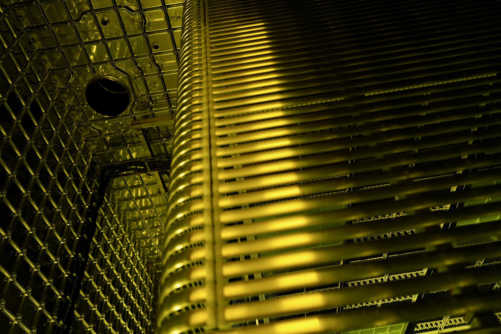
Mark Benecke · CC BY-SA 4.0Goals: δCP, ordering, octant — and supernova neutrinos.
Dashboard · νe appearance at DUNE
CP and ordering in one plot
L = 1,285 km, crust with ρ = 2.85 g/cm³. Cervera et al. (2000) expansion in θ₁₃ and Δm²₂₁/Δm²₃₁.
The matter effect separates ν from ν̄ depending on the ordering; δCP shifts and reshapes the peak.
A supernova in the Galaxy
DUNE is unique for νₑ (νₑ + ⁴⁰Ar → e⁻ + ⁴⁰K*): thousands of events for an SN at 10 kpc, with the neutronization peak and, if it happens, the cut-off of black-hole formation.
A network of observatories
Ears open for the next collapse
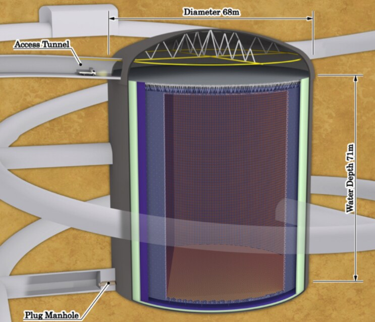
Hyper-K Collab. · CC BY 3.0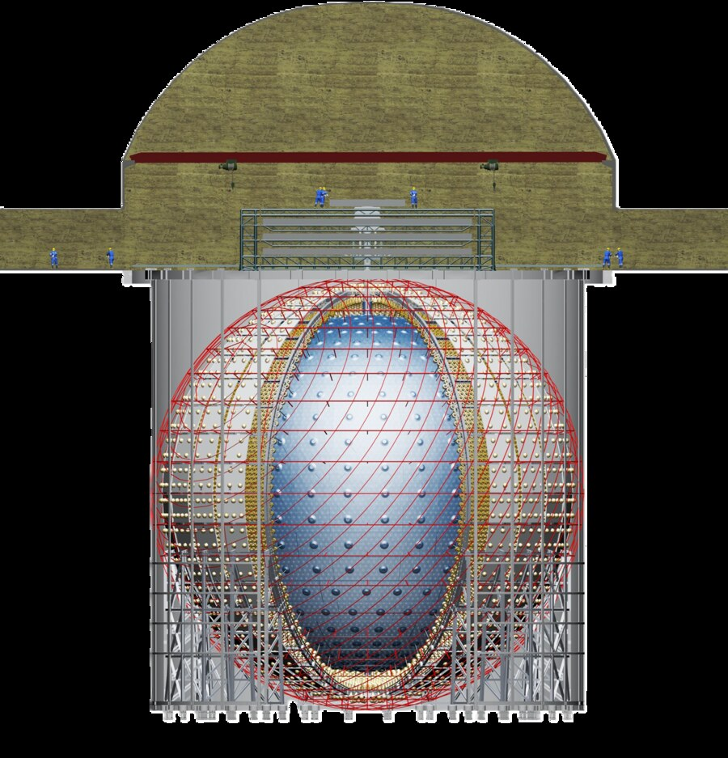
JUNO Collab. · CC BY 4.0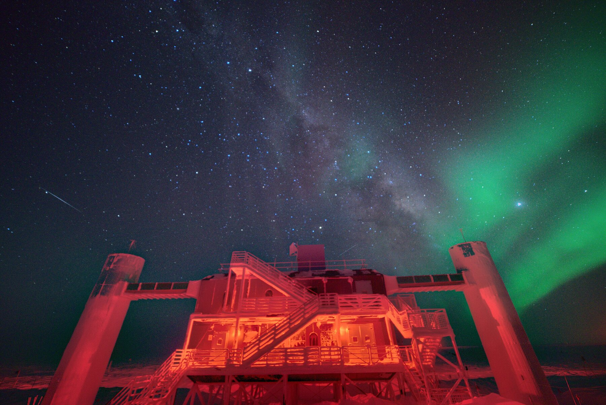
John Hardin · CC BY 4.0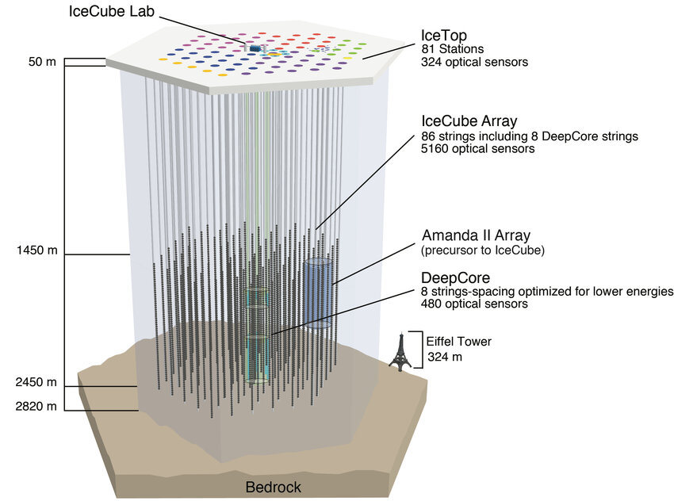
IceCube Collab. · CC BY 4.0Where the resonances live
Two densities, two encounters
The star offers every density between 1014 g/cm³ in the core and almost nothing in the envelope. Each resonance picks its own.
| resonance | Δm² | ρ at 20 MeV |
|---|---|---|
| H, θ₁₃ | 2.5×10⁻³ eV² | 1.6×10³ g/cm³ |
| L, θ₁₂ | 7.5×10⁻⁵ eV² | 19 g/cm³ |
Both sit in the envelope, not in the core: the H resonance lies tens of thousands of kilometres from the centre, and the L one further still.
Only one of them meets the shock
The shock front takes seconds to sweep the envelope. When it passes 1.6×10³ g/cm³ it crosses the H resonance. By the time it reaches the 19 g/cm³ of the L, it is already weak and diffuse.
That is why the rest of this talk is about H.
Ye = 0.5. The density scales as 1/E: at 5 MeV the H resonance sits at 6.3×10³ g/cm³, and at 60 MeV at 5.3×10².
The bridge to Part IV · M15-7b
The front sweeps the envelope and crosses the H resonance
Once revived, the shock runs outward at ~1.6×104 km/s, sweeping the envelope.
The MSW-H resonance does not live at a radius: it lives at a density.
Because the shock compresses and pushes the envelope, the radius where that density lives moves inward while the shock moves outward. The two are going to meet.
| after bounce | shock radius | resonance radius |
|---|---|---|
| 3.0 s | 35,011 km | 34,933 km |
| 10.0 s | 149,106 km | 12,471 km |
At t ≈ 3 s they coincide
78 km apart out of 35,000, or 0.2%. For a window a few seconds wide the shock front sits right on the resonance, and that is where the neutrino's flavour is decided.
Profiles derived from M15-7b, Garching CCSN Archive (A. Wongwathanarat), angular medians.
IV
Part four · results
GHOST
Which density structures in a supernova change the flavour that reaches DUNE — and what it costs to ignore the only one that matters: the shock front at the MSW resonance.
The code
GHOST: flavour oscillation without shortcuts
C core (a fork of DAEDALUS, quantum walks on graphs). The complex Hamiltonian runs in a real 2n×2n embedding; exposed as a SNEWPY FlavorTransformation, the rest of the pipeline is unchanged.
| validation | result |
|---|---|
| against NuOscProbExact (independent method) | 2.2×10⁻¹⁴ over 320 cases |
| 3 flavours + δCP in matter, against expm | 7.2×10⁻¹⁵ |
| ρ ∝ r⁻³ envelope: Pee against sin²θ₁₃ | 0.0223635 vs 0.0223608 |
| DUNE spectrum, 200 energies × 2 | 13 ms |
From Part III to here
Along a radial path, the gravitational terms in the phase cancel (Fornengo et al.). What decides the flavour leaving the star is the density structure the neutrino crosses.
The problem
A shock wave crosses the resonance
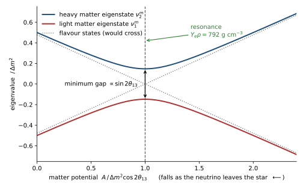
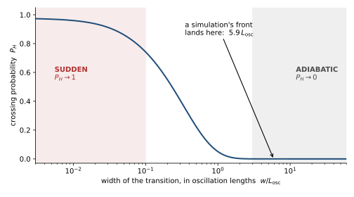
For the first seconds after bounce, the shock front sits on the H resonance. What decides the flavour DUNE measures is the shape of a shock wave.
| ordering | adiabatic Pee |
|---|---|
| normal | 0.022 |
| inverted | 0.30 |
A factor of 13 in νₑ survival — and argon counts precisely νₑ.
The gap
Three steps, and only two have matured
1 · Hydrodynamics
3D models deliver time- and angle-resolved fluxes.
2 · Flavour transformation — this step
In SNEWPY 1.5.1, for standard MSW, only two numbers: PH = 0 and PH = 1. None of the ten classes depends on post-bounce time.
3 · Detector
SNOwGLoBES turns fluxes into event rates.
“the shock front is steepened artificially to reintroduce the physical requirement of a density discontinuity which is lost in hydrodynamic simulations”
Tomàs et al. (2004) already steepened the front by hand. Twenty years later the correction has lapsed: recent work passes 24 3D models through an adiabatic constant.
The ruler behind the criterion
Adiabaticity, and the length that measures everything
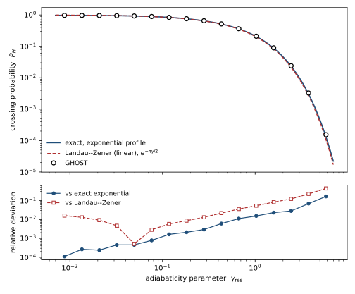
At the resonance the two matter eigenstates nearly touch. If the neutrino crosses slowly, it follows the eigenstate and PH = 0. If it crosses fast, it hops, and PH → 1.
“Slow” and “fast” are measured against a single length, the oscillation length at the resonance:
This is the ruler for the next slides
The criterion that a structure only perturbs the conversion if it is shorter than Losc is measured in this unit. And the front width recorded in M15-7b, 284 km, is exactly 4.2 Losc.
Conclusion 1 · the criterion
What the resonance can see
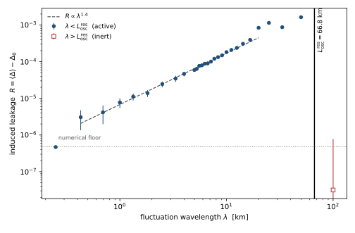
A structure perturbs the conversion only if it is shorter than Losc at the resonance. Below that, the effect grows as the square of the contrast — measured as the 2.02 ± 0.03 power — and saturates at 8%.
| structure | contrast | scale < Losc? | verdict |
|---|---|---|---|
| turbulence | 7×10⁻⁴ | ✓ | 111× below saturation |
| convection, SASI | 𝒪(1) | ✗ far too large | nothing |
| shock front | 𝒪(1) | ✓ discontinuity | saturated |
But in a simulation…
The front has no physical width
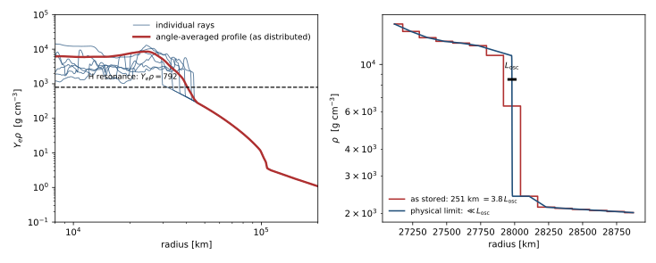
The real shock is centimetres wide. The file stores the width of the numerical scheme.
| model (Garching) | width (Losc) | zones |
|---|---|---|
| M15-7b | 4.20 | 1.67 |
| W16-3 | 3.81 | 1.65 |
| W18-3 | 3.52 | 1.64 |
| W18r-2 | 3.76 | 1.63 |
| W18x-2 | 4.67 | 1.65 |
| W20-5 | 4.22 | 1.65 |
All above the ≃ 3 Losc threshold: propagating the file as it comes returns the adiabatic result. A null produced by resolution.
Dashboard · the GHOST panel
The shock overtakes the resonance at t ≈ 3 s
Conclusion 2 · the cost
Restoring the front removes half of PH
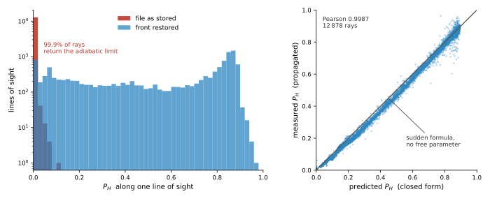
0.44–0.76
absolute ΔPH, six progenitors, 5 to 100 MeV (median 0.56)
The file as stored returns the adiabatic limit in 99.9% of rays. With the front restored, the spread (s.d. 0.32) is where one supernova is drawn from.
The closed form tracks each ray: Pearson 0.9987, no free parameter.
Conclusion 3 · at the detector
A few per cent, with a sign set by the source
| model family | bias in the νₑ CC count |
|---|---|
| Nakazato | −4.0 to −4.2% |
| Garching | −3.9 and −4.4% |
| Sukhbold | −2.9% |
| Fornax 2022 | +1.3 and +1.4% |
SNOwGLoBES, 40 kt argon at 10 kpc.
A bias of fixed sign could be absorbed into a correction factor. One whose sign follows the flavour hierarchy of the source cannot — and it is degenerate with the spectral quantities one wants to extract.
It survives in both orderings, for different reasons: −4.1% in normal, −5.4% in inverted. The systematic cannot be avoided by assuming an ordering.
Conclusion 4 · where to look
The error lives in a band, in closed form
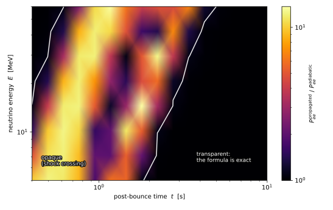
The error is not spread out: it occupies a band in the time–energy plane, and the band has a closed form.
It follows from the presupernova density profile, given the shock radius and the compression. With no flavour calculation at all.
And it closes: past t ≃ 4 s the shock has already left the density region the H resonance occupies at observable energies.
Conclusion 4 · the trap
Every progenitor has its own band
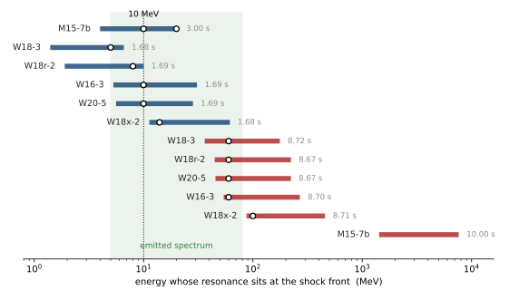
Five sibling progenitors, at the same epoch, span 1.4 to 61.6 MeV. And no single energy falls inside all five bands.
The practical consequence
Comparing models at a fixed energy returns a false null: in each model you will be outside some other model's band.
We fell into that trap before measuring it.
The band depends on each star's presupernova structure, which differs between progenitors even at the same initial mass.
Honestly
What this settles and what it doesn't
Three statements
- A criterion with a number: the response is extinguished above ≃ 3 Losc. “Steepen the front by hand” becomes a checkable condition.
- The cost: 0.44–0.76 in PH and a few per cent in the argon count, with a sign set by the source.
- Where to look: the (t, E) band in closed form, from presupernova structure.
Limits
- The scales that act are in no model: grids resolve nothing shorter than 4.7 Losc. The turbulence amplitude is extrapolated.
- Blue supergiants only (six Garching models).
- Not yet an observable: a few σ at 10 kpc, scaling as 1/d.
R. C. R. de Lima, Which density structures affect supernova neutrino flavour conversion, and the shock front at the MSW resonance — in preparation (2026).
Summary
Four things to take home
1
Flavour oscillation is phase interference. The phase is ∫pμdxμ — and that holds in any geometry.
2
Supernovae and collapsars emit neutrinos a few rs out. There, redshift, bending and local quantities are not corrections: they are the physics.
3
Gravity doesn't only get in the way: with several paths, it measures mk². DUNE and the SNEWS network are ready for the next galactic supernova.
4
In a supernova only the shock front passes the resonance criterion — and simulations store it too wide. Restoring it changes PH by 0.44–0.76 and the DUNE count by a few per cent.
References
To go further
Part I
W. Pauli, letter of 4/12/1930
E. Fermi, Z. Phys. 88, 161 (1934)
H. Bethe, R. Peierls, Nature 133, 532 (1934)
C. L. Cowan et al., Science 124, 103 (1956)
G. Danby et al., PRL 9, 36 (1962)
R. Davis et al., PRL 20, 1205 (1968)
B. Pontecorvo, Sov. Phys. JETP 26, 984 (1968)
Z. Maki, M. Nakagawa, S. Sakata, PTP 28, 870 (1962)
L. Wolfenstein, PRD 17, 2369 (1978)
S. Mikheyev, A. Smirnov, Sov. J. Nucl. Phys. 42, 913 (1985)
Super-Kamiokande, PRL 81, 1562 (1998)
SNO, PRL 89, 011301 (2002)
DONUT, PLB 504, 218 (2001)
NuFIT 6.0, JHEP 12, 216 (2024)
KATRIN, Science 388, 180 (2025)
Part II
A. Einstein, Sitzungsber. Preuss. Akad. 844 (1915)
K. Schwarzschild, Sitzungsber. Preuss. Akad. 189 (1916)
F. Dyson, A. Eddington, C. Davidson, Phil. Trans. A 220, 291 (1920)
R. Pound, G. Rebka, PRL 4, 337 (1960)
R. Hulse, J. Taylor, ApJ 195, L51 (1975)
LIGO/Virgo, PRL 116, 061102 (2016)
EHT, ApJL 875, L1 (2019); 930, L12 (2022)
S. Woosley, ApJ 405, 273 (1993)
A. MacFadyen, S. Woosley, ApJ 524, 262 (1999)
R. Popham, S. Woosley, C. Fryer, ApJ 518, 356 (1999)
Part III
K. Hirata et al., PRL 58, 1490 (1987)
R. Bionta et al., PRL 58, 1494 (1987)
L. Krauss, S. Tremaine, PRL 60, 176 (1988)
M. Longo, PRL 60, 173 (1988)
L. Stodolsky, Gen. Rel. Grav. 11, 391 (1979)
N. Fornengo, C. Giunti, C. W. Kim, J. Song, PRD 56, 1895 (1997)
C. Cardall, G. Fuller, PRD 55, 7960 (1997)
H. Swami, K. Lochan, K. Dixit, PRD 102, 024043 (2020)
M. Gasperini, PRD 38, 2635 (1988)
A. Halprin, C. Leung, PRL 67, 1833 (1991)
J. Beacom, R. Boyd, A. Mezzacappa, PRD 63, 073011 (2001)
A. Cervera et al., NPB 579, 17 (2000)
O. Caballero, G. McLaughlin, R. Surman, ApJ 745, 170 (2012)
J. Cherry et al., PRL 108, 261104 (2012)
DUNE FD TDR, arXiv:2002.03005 (2020)
Part IV
R. Schirato, G. Fuller, astro-ph/0205390 (2002)
G. Fogli et al., PRD 68, 033005 (2003)
R. Tomàs et al., JCAP 0409, 015 (2004)
V. Barger, P. Huber, D. Marfatia, PLB 617, 167 (2005)
A. Dighe, A. Smirnov, PRD 62, 033007 (2000)
J. Kneller, G. McLaughlin, K. Patton, J. Phys. G 40, 055002 (2013)
K. Patton, J. Kneller, G. McLaughlin, PRD 89, 073022 (2014)
A. Wongwathanarat, E. Müller, H.-T. Janka, A&A 577, A48 (2015)
A. Baxter et al. (SNEWPY), ApJ 925, 107 (2022)
M. Bustamante (NuOscProbExact), arXiv:1904.12391
DUNE, EPJC 81, 423 (2021)
R. C. R. de Lima, in preparation (2026)
Image credits
Freely licensed photos and figures
Wolfgang Pauli — unknown author · CC BY 4.0

Pauli's letter, 1930 — Wolfgang Pauli · CC BY 4.0
Enrico Fermi — Department of Energy. Office of Public Affairs · Public domain

Cowan and Reines — Savannah River Site · Public domain

Raymond Davis Jr. — U.S. Department of Energy from United States · Public domain

Homestake tank — U.S. Department of Energy from United States · Public domain

Bruno Pontecorvo — unknown author · Public domain

50 cm photomultiplier — Daderot · CC0

Takaaki Kajita — Bengt Nyman · CC BY-SA 4.0

Arthur B. McDonald — Bengt Nyman · CC BY-SA 4.0

SNO+ — The SNO+ Collaboration · CC BY 4.0

Standard Model — Cush · Public domain

Albert Einstein — Ferdinand Schmutzer / Adam Cuerden · Public domain

1919 eclipse — ESO/Landessternwarte Heidelberg-Königstuhl/F. W. Dyson, A. S. Eddington, & C. Davidson · CC BY 4.0

Karl Schwarzschild — unknown author · Public domain

M87* — Event Horizon Telescope, uploader cropped and converted TIF to JPG · CC BY 4.0

Sgr A* — EHT Collaboration · CC BY 4.0

GW150914 — B. P. Abbott et al. (LIGO Scientific Collaboration and Virgo Collaboration) — full list… · CC BY 3.0

PSR B1913+16 — Inductiveload · Public domain

Crab Nebula — NASA, ESA, J. Hester and A. Loll (Arizona State University) · Public domain

SN 1987A — ESA/Hubble & NASA · CC BY 4.0

WR 124 (JWST) — NASA, ESA, CSA, STScI, Webb ERO Production Team · CC BY 4.0

GRB mechanism — NASA/Goddard Space Flight Center/ICRAR. · Public domain

GRB illustration — (Credit: NASA/CXC/M.Weiss) · Public domain
IceCube Lab — John Hardin · CC BY 4.0

IceCube schematic — Karen Andeen and Matthias Plum for the IceCube Collaboration · CC BY 4.0

Neutron star (illustration) — (Credit: CXC/M. Weiss) · Public domain
JUNO — JUNO Collaboration: Angel Abusleme, Thomas Adam, Shakeel Ahmad, Rizwan Ahmed,… · CC BY 4.0

Hyper-Kamiokande — Shota Izumiyama (Tokyo Inst. Tech.) for the Hyper-Kamiokande collaboration · CC BY 3.0

The Sun (SDO) — NASA/SDO (AIA) · Public domain

ProtoDUNE — Markbenecke · CC BY-SA 4.0

Part IV figures and shock panel — R. C. R. de Lima (GHOST); profiles derived from the Garching CCSN Archive (M15-7b, A. Wongwathanarat); archive files are not redistributed
Thank you
Questions?
Slides and dashboards open at rafael-lima.pages.dev/talks